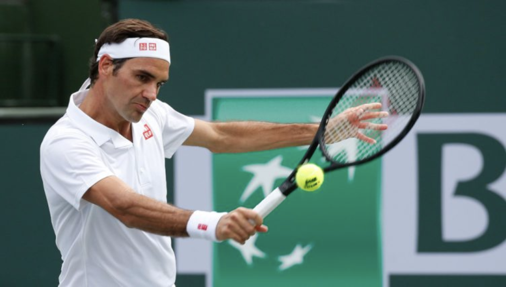
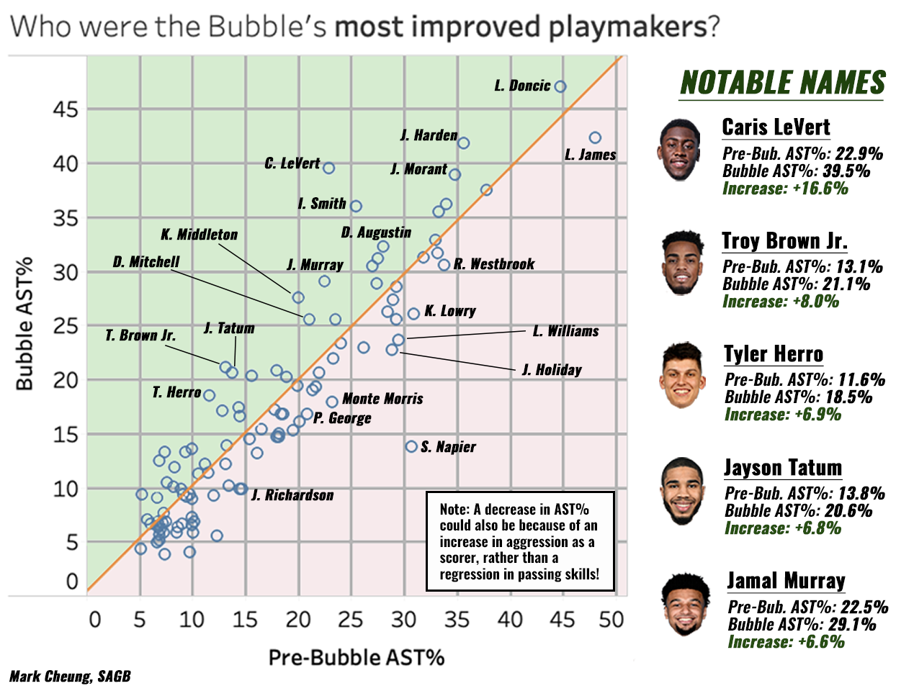
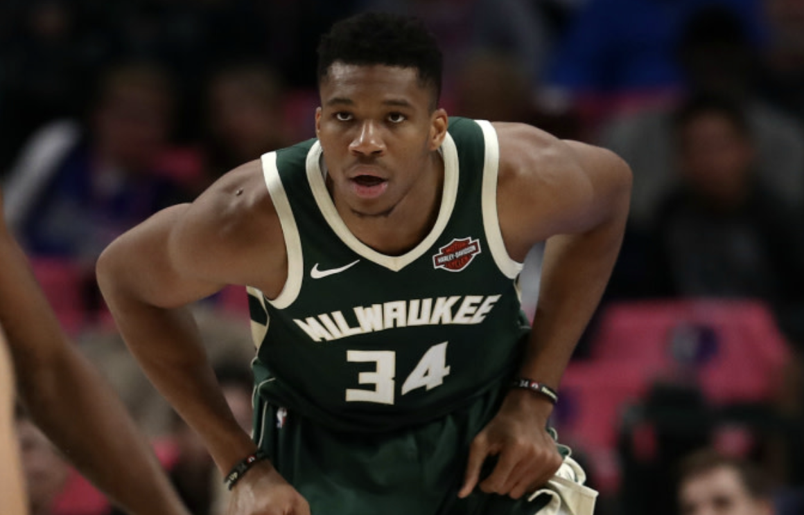

Investing in Bigmen
At this point, what even are bigmen? On some nights, the traditional concept of the stout and sturdy seven-foot paint presence burns bright. But on other nights, the 6’4” former-PG Bruce Brown is just as much of a…


At this point, what even are bigmen? On some nights, the traditional concept of the stout and sturdy seven-foot paint presence burns bright. But on other nights, the 6’4” former-PG Bruce Brown is just as much of a…

For 133 days, basketball stopped. Arguably the most competitive NBA season since the inception of the Warriors dynasty simply vanished at the swipe of a cotton swab. Games were indefinitely postponed. Practice…

Since the invention of the three-point line in 1979, five positions have been established in the NBA: point guard, shooting guard, small forward, power forward, and the center. While the NBA rule book never explicitly…